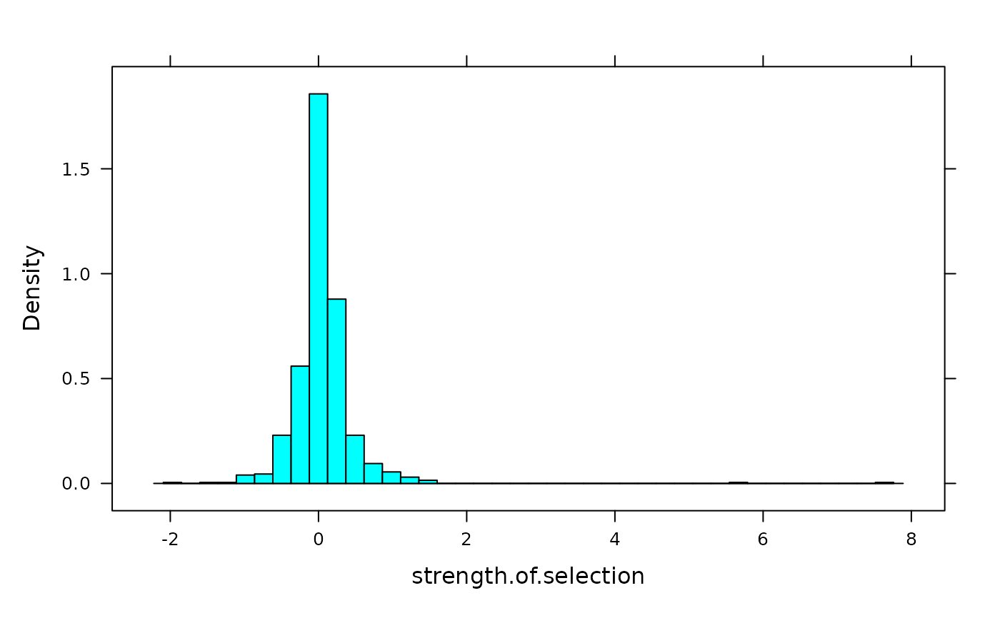

Data for Meta-analysis
Selection.RdData for meta-analysis on the relationship between testosterone and aggression.
Format
A data frame with 814 observations on the following 8 variables.
- species
species investigated
- traitname
trait investigated
- strength.of.selection
strength of selection
- sample.size
size of sample
- authors
authors of publication
- year
year of publication
- journal
journal of publication
- volume.pages
volume and pages
Source
Kingsolver, J.G., H.E. Hoekstra, J.M. Hoekstra, D. Berrigan, S.N. Vignieri, C.E. Hill, A. Hoang, P. Gibert, and P. Beerli. 2001. The strength of phenotypic selection in natural populations. The American Naturalist 157: 245-261.
Examples
histogram(~ strength.of.selection, Selection,n=40)

table(Selection$species) -> s
table(s)
#> s
#> 1 2 3 4 5 6 11 12 17 18 19 22 23 24 25 28 30 31 38 41
#> 5 2 6 9 3 3 2 3 2 1 1 1 1 1 1 1 2 2 1 1
#> 43 59 164
#> 1 1 1
s[s>10] # most common species
#>
#> Aquarius remigis Asclepias syriaca
#> 164 30
#> Bolitotherus cornutus Chamaecrista fasciculata
#> 17 28
#> Collinsia verna Cypripedium acaule
#> 23 19
#> Gammarus minus Geospiza conirostris
#> 11 41
#> Geospiza fortis Gerris odontogaster
#> 31 25
#> Hetaerina americana Homo sapiens
#> 17 12
#> Ipomopsis aggregata and tenuituba Libellula luctuosa
#> 18 24
#> Lobelia cardinalis Melospiza melodia
#> 11 12
#> Mimulus guttatus Nerodia sipedon
#> 22 59
#> Parus major Plathhemis lydia
#> 31 12
#> Pontia occidentalis Pyrenestes ostrinus
#> 30 43
#> Raphanus raphanistrum
#> 38
table(Selection$traitname) -> t
table(t)
#> t
#> 1 2 3 4 5 6 7 8 10 11 12 13 14 15 24 28
#> 43 25 27 32 3 18 6 2 3 7 6 2 1 4 1 1
t[t>10] # most common traits
#>
#> abdomen length (multivariate) abdomen length (univariate)
#> 11 11
#> beak depth beak length
#> 13 13
#> body size DB (dors blotches)
#> 12 15
#> genital length (multivariate) genital length (univariate)
#> 11 11
#> habitat preference LB (lat blotches)
#> 28 15
#> mesofemoral length (multivariate) mesofemoral length (univariate)
#> 12 12
#> profemoral width (multivariate) profemoral width (univariate)
#> 12 12
#> ROWS (ht of lat blot thorax length (multivariate)
#> 15 11
#> thorax length (univariate) timing of germination
#> 11 24
#> total body length (univariate) VEXT extent of venter
#> 11 15
#> weight wing length
#> 12 14